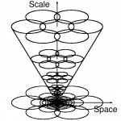
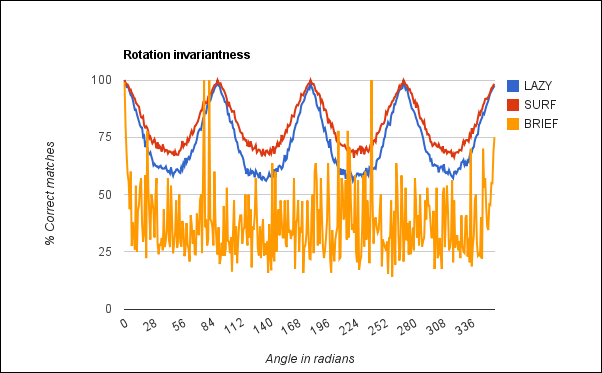
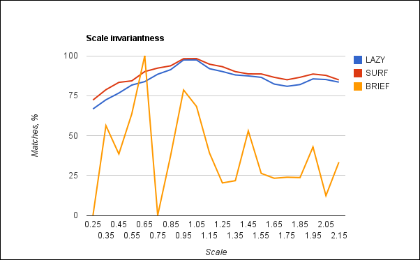
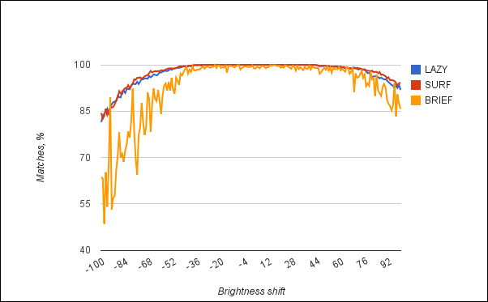
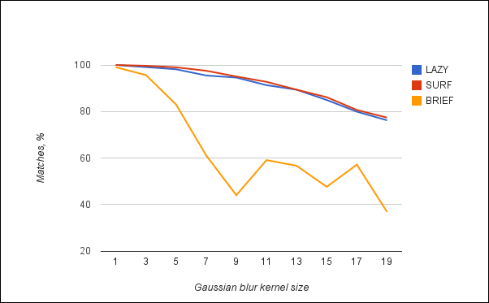
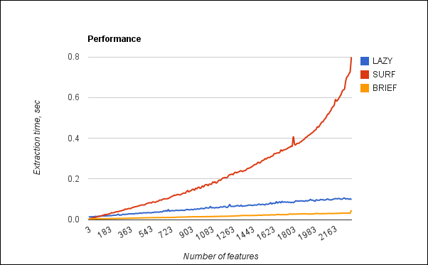

Hello everyone! Today, we have very interesting topic! We will inspect different feature descriptor extractors. From this post you will know how robust is SURF, which disadvantages has BRIEF descriptor and how many times LAZY descriptor is faster than SURF. PS: I will be really appreciate if you point me to good implementations (C/C++) of RIFF, PCA SIFT, GLOH, LESH descriptors. I will include them in test suite. So, today our guinea pigs are:
- SURF (OpenCV implementation)
- BRIEF (OpenCV implementation)
- SIFT (OpenCV implementation) Excluded from test – extremely slow
- LAZY (Own implementation)
Five test: rotation, scaling, brightness change, blur and performance benchmark. Those tests should give us information about rotation, scaling and lighting invariant of feature descriptor and also describe total descriptor robustness. Performance benchmark will show how much expensive descriptor extraction is.
Tests description
In all tests I use single reference image:
I love this image very much. It has a large number of similar areas, reflections on a car and it’s just nice :). For feature detection I will use SurfFeatureDetector from OpenCV with default settings. In all tests I use very similar routine:
- Generate set of transformed images
- Detect features on each image and extract descriptors
- Match descriptors with descriptors from the reference frame. For matching I use flann matcher from OpenCV in both directions (Match reference descriptors with transformed and vice versa and return their intersection as a result)
- Use RANSAC (cv::FindFundamentalMat) to filter false positive matches.
- As a result I return (number of inliers) / (total matches) in percent’s.
Rotation test will apply affine rotation for this image around it’s center for 360 degrees with 1 degree step. Scaling test will resize image using scale factor in range [0.25..2.25]. Lighting test will change image brightness of each pixel of image in range [-100..100]. Blur test will smooth image using Gaussian blur with different kernel size [1..21]. **Performance test **will measure descriptor extraction time for [1..N] descriptors from the reference image.
Results

As expected, SURF and LAZY demonstrate good rotation invariant behavior. BRIEF is a not rotation invariant descriptor since it just a image patch.

In scaling test SURF and LAZY demonstrates very similar results – and yes, BRIEF is not scale invariant. Local extremum regions can be explained as side effect of resizing.

In lighting test all descriptors showed good results. Probably because all descriptors are normalized.

BRIEF very sensitive to blurred image (remember – it’s just a patch). LAZY and SURF demonstrate almost identical results.
Performance

Due to the very trivial nature of the BRIEF descriptor it demonstrates the best performance. Extraction of LAZY descriptor is also very fast because of it doesn’t use heavy calculations as SURF does. I can not explain the quadratic grow of the extraction time for SURF descriptor. Probably it can be caused by non-optimal implementation in OpenCV.
Conclusion
Our research, LAZY descriptor provides almost identical to SURF quality but works at least 2 times faster. But it’s research is not finished, so I expect 10-30% performance speedup and slight quality improvement (maybe it will beat SURF sometime).
Further work
In a near future I will add PCA SIFT and RIFF descriptor implementation to all tests and do them on other test images.